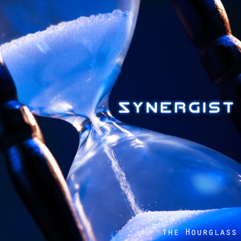

the Hourglass
by Synergist - Lyrics by CutcH*

when I began, the world, it gave me little time
left in the womb, well I would be left to die
time was slipping through the hourglass
I can't deny it, I owe my life to disrupting that
well... time is everything
it's everything
but though the moment comes and goes
believe
if the time was right for you to meet your ghost, you would
throughout this life I've been asleep inside of time
I cannot fight it, I've ingrained it in my mind
time is slipping through the hourglass
right here, right now
I just can't wait for the time to pass
and well... time is everything
it's everything
but though the moment comes and goes
believe
if the time was right for you to meet your ghost, you would
well you'd find your hard earned soul
as one within it all
you'll see beyond our "dimensia"
I believe there is a plane above our minds
past the constraints of time
connect to the divine
see it live, see it die
ask yourself why
well I believe there is a plane beyond the bounds of time
I cant deny myself, cause I don't have the right
well I search for answers still, I'm of the conscious mind
time is shattering the hourglass
I fear the change, but I just can't wait for the aftermath
yeah, well... time is everything
it's everything
but though the moment comes and goes
believe
if the time was right for you to meet your ghost, you would
all this time has come to pass
and all the while there was the hourglass *CutcH is Craig McCutcheon |